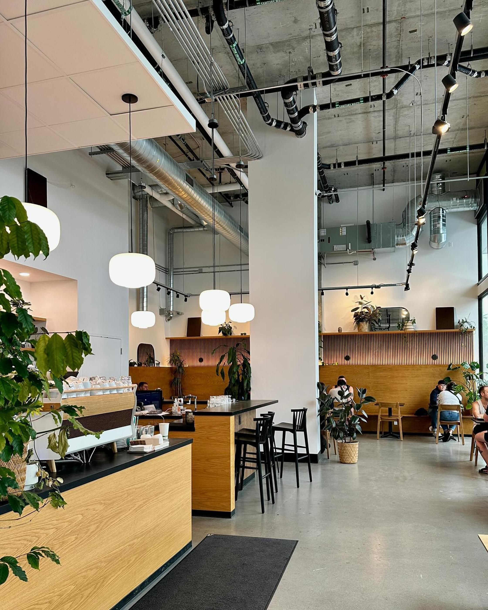
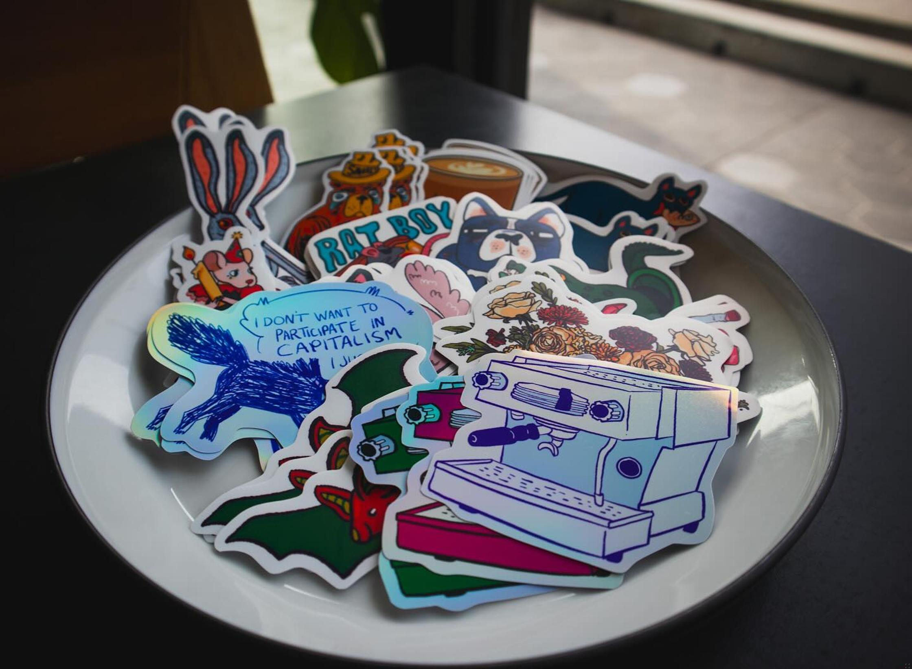
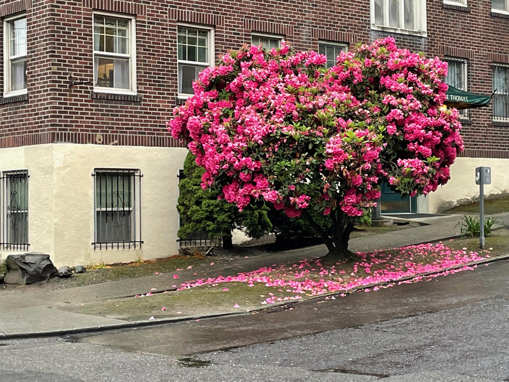

Seasmith (Capitol Hill)
October 17, 2025

When, in the course of human events, it becomes necessary for a person to find a way to occupy their time, particularly those hours Monday to Friday nine to five, they might find an Occupation. Absent that, maybe a Charitable Cause. Or perhaps they'll create heartfelt Art. Short of all that, they might simply pass the time. And they might as well get paid while it passes, so they get a desk job. And if they still aren't entertained, they begin rating coffee shops: the outsourced office space of so many itinerant internet workers, the home away from home for those who work from home.
In this series, I visit the region's cafes and rate their suitability for remote work. With my keen senses and a unique set of heuristics, I attempt to separate the wheat from the chaff, to surface those true gems, where the bored working hours of the computer-bound just might pass with pleasure.
The rating system:
Quality of Beverage: Will you drink well?
Quality of Victuals: And how will you eat?
Strength of WiFi: Will you surf speedily?
Genre of Clientele: With whom will you share the waves?
Staff Congeniality: Will you be served or get served?
Atmospheric Warmth: Have you hope of comfort, at least?
Musical Taste: Should you bring headphones?
Elbow Room: You are a sheep. But are you free range?
Overall Rating: 1-5 stars
What's a seasmith? It almost sounds like a real word. But then, what does a seasmith smith? All the seas were smithed already. Are the gods or glaciers the seasmiths?
They needed a name for the cafe-by-day, bar-by-night on the corner of Broadway and Denny. I think they made one up. It leans on tried and true Seattle themes: the ocean, blue collar work, nostalgia for the days when that kind of work was at the forefront here.
Print the name atop a minimalist menu, tape it to the thirty foot floor-to-ceiling windows wrapping the street-facing walls, add some wooden furniture and a few plants and you've got a vibe.
That's the bar these dime-a-dozen shops in the bottom of new mixed-used developments are trying to clear, right? It's clean, it's Instagram-friendly. What else can you do when the bones of your building lack the weathered character of one that's been around fifty years or more? (This building opened in 2021 as part of the larger Capitol Hill light rail station development). Slap a picture on the window of an iced matcha latte in a cylindrical glass and you'll have lines at the register.

And yet the Pleasantly Not Kind baristas at Seasmith are pouring a damn fine cup of joe (Quality of Beverage: Superlative). Pick from a handful of single origin beans when you get your drip and be ready for an electric charge. Grab a cookie, too - baked in house. I'm partial to the sugar cookie with sprinkles, flattened like a smash burger, satisfyingly chewy (Quality of Victuals: Pleasant).
I've spent a few afternoons now at the cafe, which opened last summer across the street from the light rail station's southeast entrance. It's a fifteen second walk from Cal Anderson Park and adjacent to the Capitol Hill farmer's market which operates on Denny twice a week. It's one of the most pedestrian-dense parts of the city. And with few other cafes within a handful of blocks, there's not much competition.
Any cafe with a pulse would survive on this corner, no? (A Starbucks across the street did close last year). But the quality at Seasmith is a cut above the minimum requirement. Why? Maybe just because. Maybe the baristas and bakers here love their craft. Art for art's sake. That's the difference between smithing and stamping out.

For my part, as I sat recently at the bar near the espresso machine and watched folks walk under changing leaves in Cal Anderson, I was grateful. When a quality business holds a featured position in a neighborhood, it's supercharging. It brings people out. Stories start writing themselves.
And just who are the people around Capitol Hill these days? If they're the people camped at Seasmith each workday (Elbow Room: Lacking), they skew young, just as the neighborhood's reputation suggests. Grungy no more, not quite hipster, the customers here do curate their looks. There are the fashion-conscious college kids, usually in a group of four or more, with their Matrix sunglasses and baggy pants. And there are the DINKs, in tech, with expensive Italian leather shoes and sleek haircuts. (Clientele: Gen Z Grease, Youthful Hip, Capitalist).
They're here to work, whether for their serious college course or their serious remote job. They're surfing Snappy WiFi and they're not distracted by the 2010s pop that the baristas play with a smidge of irony (Headphones Out). The baristas, always tastefully dressed, always a little disheveled, do not mix with the customers but they gossip among themselves. (Atmosphere: Pleasantly Not Warm).
This is Seattle at its most cosmopolitan.
At the bar, around the L from me, were two women in their early thirties. One with brown hair, a lavender wool sweater, and black rectangular glasses. The other was blonde with a white pirate's blouse under a checkered vest. The blonde woman was the other's real estate agent.
In Capitol Hill, you meet your real estate agent at a stylish cafe.
It turns out that the real estate agent was getting married. She'd had her laptop on the bar so that she and the buyer could peruse listings. They'd ordered from Seasmith's list of natural wines and when the glasses came, she pulled up a Pinterest board on the screen.
"This is the fire element that I want at the ceremony," she said. "This is the water element."
She showed the buyer some pictures from a recent trip to Oaxaca where she wore a fedora.
"Will that be the altar?" the buyer asked.
"Yeah, I'm thinking I'll have to build it myself."
"Out of clay?"
"Yes, I was thinking clay. But maybe just driftwood?"
The buyer took a sip of her wine then said, "I should stop the alerts for Bellingham. We're not going to live there."
"I didn't think that made sense for you," said the realtor, typing.
"It's just cheaper."
The realtor looked up at her. "Is he worried about the money?"
"I mean, it's a lot of money."
"He's probably thinking in his head, 'Why would I buy a house when I don't have a job?'"
"No," said the buyer. "He's thinking, 'Why would I get a mortgage in Ballard when I could buy in cash somewhere else?'"
They both looked to the laptop screen as the realtor zoomed in on a map of million dollar homes in north Seattle.
"I'm finally figuring out renting a healing space," said the realtor.
In Capitol Hill, your real estate agent is also a healer.
"There's an office nearby," she said, "but I also like a sublet I found in Fremont."
They scrolled past an infinite stream of pictures of houses as the air leaked from the conversation.
"I'd be focused on trying to stay under a million," said the realtor. "Try to take a step up from where you are. You can have your yard and your green house and a nice stove someday. But for now, you should pick just one of those.
"Don't get caught up in dreaming."
4/5 stars